vi可以加各种参数vi +4 oeasy.txtvi +/shiyanlouvi +%s/shiyanlou/oeasy/g oeasy.txtvi可以接收stdin的参数ls -lah | vi -vi还有各种模式ex oeasy.txt或者vi -e oeasy.txtvi -R oeasy.txt或者view oeasy.txt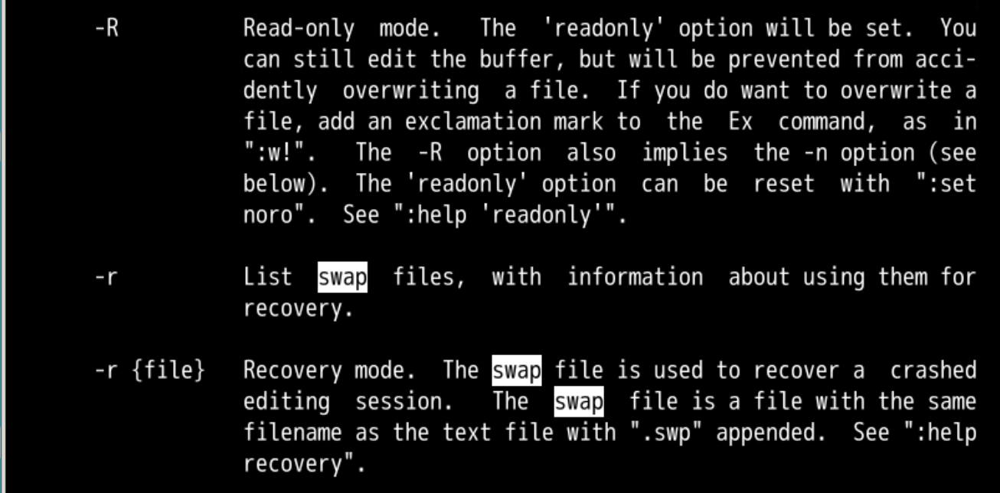
- 如果加一个-r的参数可以么
- 帮助手册说的swap是什么意思？🤔
vim 查询:h swap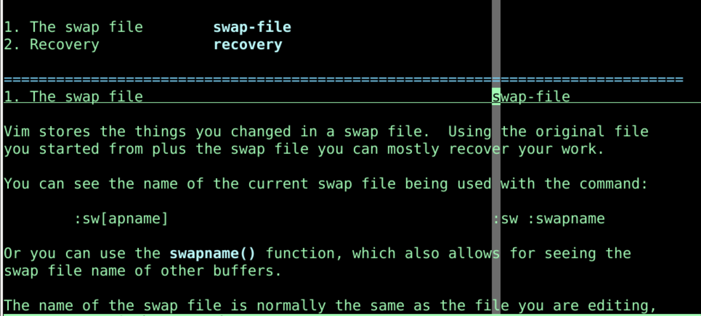
Code 文件夹 vi内存vim进程结束，什么都会消失w oeasy.txt 继续编辑oeasy.txt的swap替换文件:sw.oeasy.txt.swp . 意味着 此文件为隐藏文件oeasy.txt 原始文件的名字.swp 意味着是 swap替换文件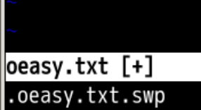
terminalterminalls -lah *oeasy*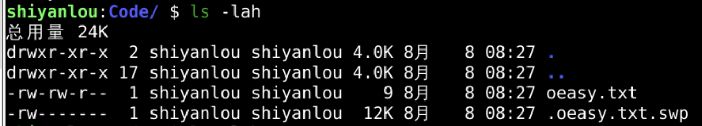
:w时保存的文件.swp交换文件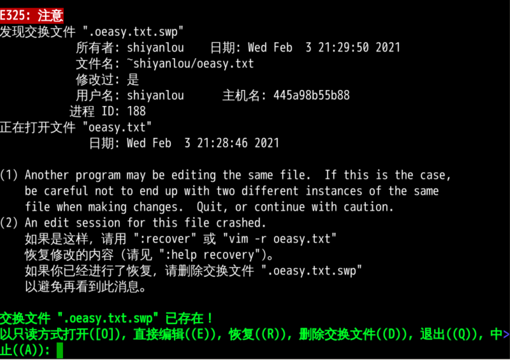
vi oeasy.txt.oeasy.txt.swpswp替换文件，命名为swossa:sw看到ls -lah看到.oeasy.txt.swp并打开:w才把swap文件存储于oeasy.txt 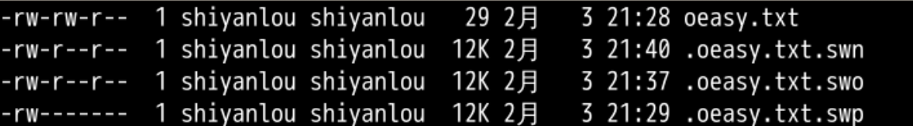
vi oeasy.txt时选择Recovervi -r oeasy.txtE 进入原始文件之后运行命令 :rec:w保存文件后，并不会把修改保存到.swp文件中swp交换文件会让你选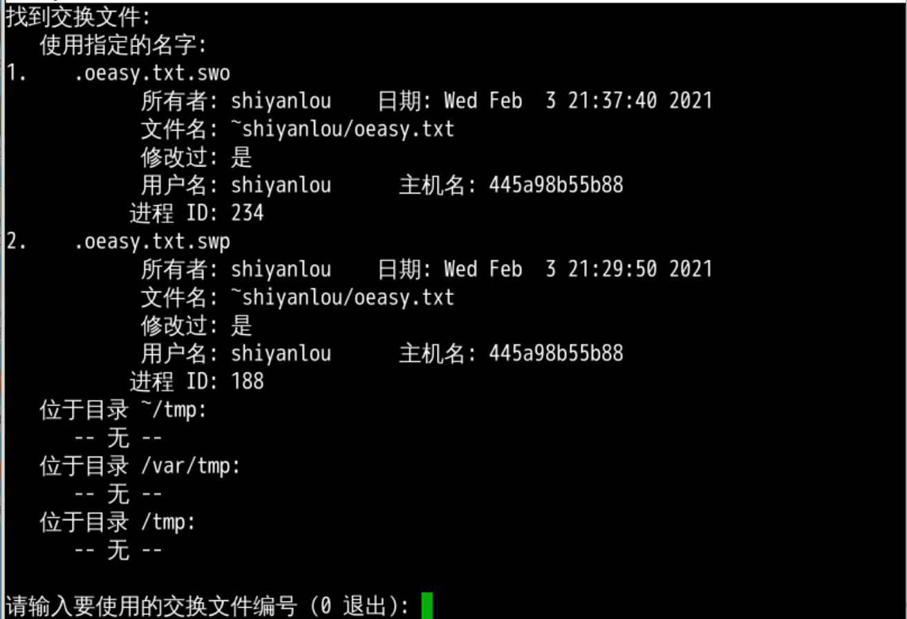
:saveas oeasy.txt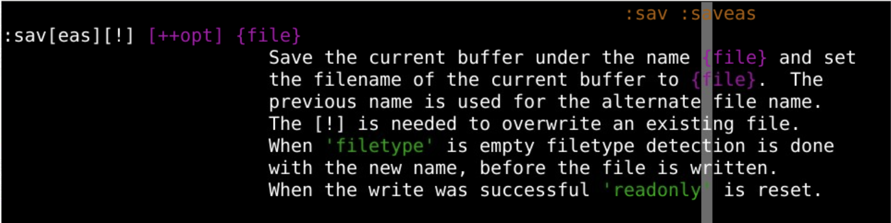
:w >> o2z.txt:set dir=/temp/vim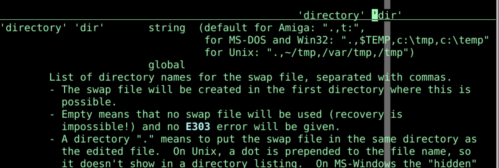
~/.vimrc中，每次都自动设置:nos(wapfile)swap文件swap文件更新的触发条件:set updatecount=300updatecount swap文件200:set updatetime=10updatetime swap文件4000 毫秒:preserver强行更新swap文件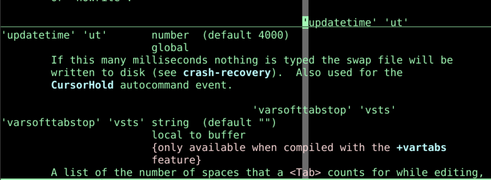
vim 一般没有产生备份文件:set backup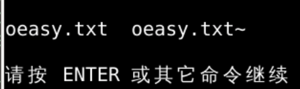
:set backupext=.bak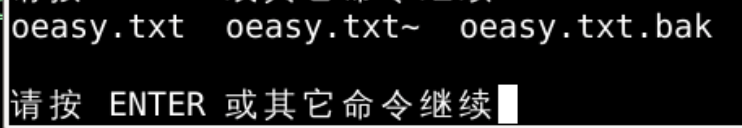
:set backupdir=/tmp/backup!mkdir /tmp/backup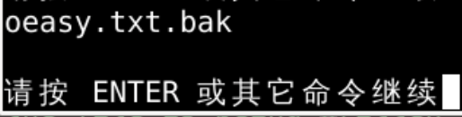
写备份writebackup:set nobackup:set writebackup:w了之后git 来解决swap文件swp已经存在swo文件vim 都是打开单一文件vim可以打开两个文件吗？🤔